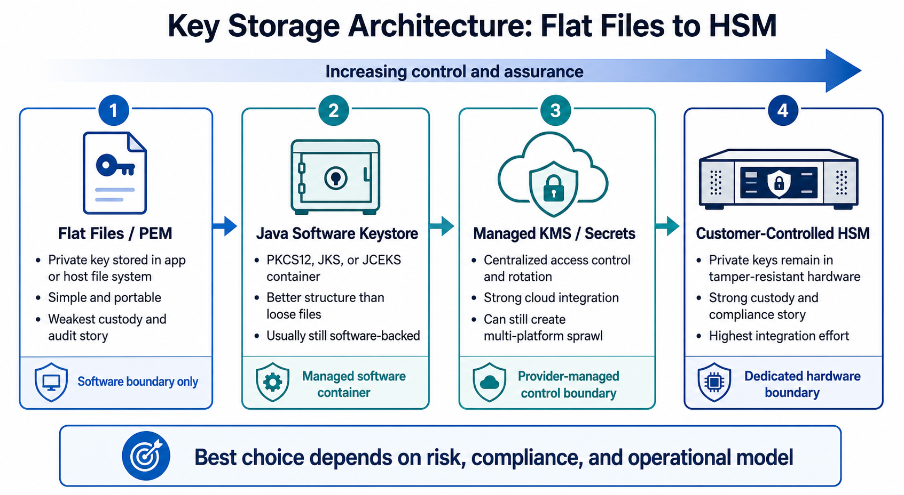

01 USER
People and process
Phishing-resistant MFA, role-aware training, secure key ceremonies, and clear incident reporting reduce preventable access mistakes.
A hardware security module is a powerful control for private-key custody, but it is one layer in a complete security design. The strongest programs reduce risk across people, identity, networks, applications, data, and the cryptographic boundary.
Core principle: make valuable keys difficult to copy, difficult to misuse, and easy to audit. Do not rely on a PEM file, a source repository, or a single control to carry the entire burden.
Defense in depth assumes that one control can fail. Each layer should reduce either the likelihood that an attacker reaches sensitive cryptographic operations or the impact if they do.
Phishing-resistant MFA, role-aware training, secure key ceremonies, and clear incident reporting reduce preventable access mistakes.
Least privilege, short-lived credentials, separation of duties, and privileged access workflows constrain who can use sensitive services.
Private connectivity, segmented management planes, egress controls, and monitored boundaries limit lateral movement to key systems.
Code review, secret scanning, signed builds, patching, policy enforcement, and approval gates protect the services that request cryptographic operations.
Envelope encryption, AES-GCM, key versioning, rotation, and minimized plaintext boundaries protect data at rest and in transit.
Generate and retain high-value private keys in hardware. Applications request operations through controlled handles instead of copying key material.
Files such as PEM, JSON service-account keys, and application configuration are convenient because software can read them directly. That convenience also makes copying possible for any attacker or process that gains sufficient access.
That does not eliminate the need for authorization controls. An attacker who compromises an authorized application can still try to request a valid operation. The HSM layer should therefore be paired with policy, segmentation, monitoring, and application controls.

An HSM should not be positioned as a guarantee that a breach cannot happen. This matrix identifies where hardware-backed, non-exportable keys can reduce key-copy risk and where additional controls remain necessary.
| Incident | Publicly documented issue | How hardware key custody helps | What it does not solve alone |
|---|---|---|---|
| Microsoft Storm-0558 2023 | A signing key was used to forge authentication tokens. The exact acquisition path remained unresolved in the public review. | Reduce copy risk: non-exportable signing keys and isolated signing operations make key extraction materially harder. | Not sufficient alone: authorized use, control-plane access, logging, and key lifecycle controls still matter. |
| LastPass 2022 | Attackers obtained credentials and keys used to access and decrypt cloud-storage volumes; later disclosures described internal scripts containing secrets and certificates. | Reduce key sprawl: keep data-encryption and decryption keys in an HSM instead of scripts, endpoints, or backups. | Not sufficient alone: endpoint compromise, privileged access, and cloud access policies must also be addressed. |
| SolarWinds 2020 | The certificate used to sign affected Orion software releases was revoked as part of the response to the supply-chain compromise. | Protect signing keys: an HSM-backed signing service can keep the private key non-exportable and add approval and audit controls. | Not sufficient alone: compromised build systems can still submit malicious code for valid signing without strong build integrity controls. |
| Toyota T-Connect disclosed 2023 | Source code contained an access key for a data server, contributing to a lengthy data exposure. | Related lesson: move high-value cryptographic private keys out of files and repositories. | Use a different primary control: API and cloud access keys need workload identity, secret scanning, rotation, and short-lived credentials. |
An HSM reduces the ability to copy a private key from a host, repository, backup, or application process.
Why it matters: non-exportable keys reduce the blast radius of key-material exposure and centralize control around sensitive operations.
An HSM prevents every breach.
Why it matters: HSMs strengthen key custody, but identity, application, network, monitoring, and incident-response controls remain essential.